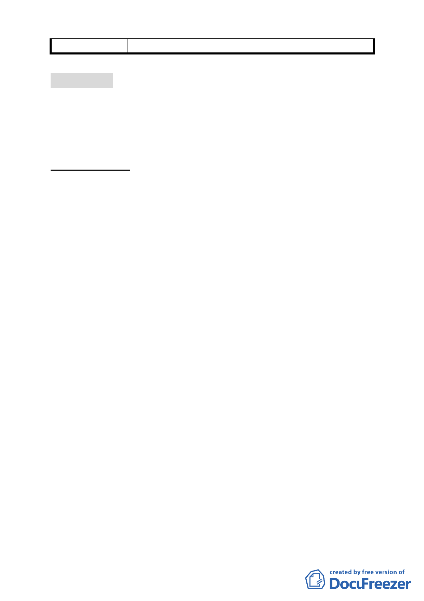

委 員 會 決 議 所提建議業已錄案供委員審議參考。
討論事項 六
案名：修訂臺北市基隆河（中山橋至成美橋段）附近地區細部計
畫商業區（供商業購物中心使用）街廓編號 A2 基地（中山
區金泰段 105-2、105-3 等 2 筆地號）土地使用分區管制規
定與都市設計管制要點計畫案
案情概要說明：
一、 本計畫區位於「修訂台北市基隆河（中山橋至成美橋段）附
近地區細部計畫」A2 商業區（供商業購物中心使用）範圍內，
基地北側臨 15M 樂群三路，東臨 20M 敬業三路，西側臨 15M
敬業二路，南側臨 20M 樂群二路，面積共計 12,426 平方公尺。
其現況使用為空地、本計畫原使用分區為商業區（供商業購
物中心使用），建蔽率 60％、容積率 250％，土地權屬為私人
所有。
二、 變更計畫緣起與目的：
忠泰建設股份有限公司、奇泰建設股份有限公司以符合本市「徵求參
與『促進都市再生 2010 年臺北好好看』開放計畫案」之「科技產業
軸帶」範疇，留設廣場式開放空間，透過整體性開放空間之規劃，有
效串連周邊商業、娛樂、住宅等多樣性之使用行為，形塑本區高品質
之居住、休憩環境意象。經提 97 年 10 月 31 日臺北市政府「徵求參
與『促進都市再生 2010 年臺北好好看』開發計畫案」審查委員會審
查同意推薦，依都市計畫法第 24 條研提本修訂計畫案。
三、 變更計畫內容概述：
（一）計畫內容概述
1.土地使用分區管制：
（1）本地區街廓編號A2之商業區（供商業購物中心使用）（中山區金
泰段105-2地號、105-3地號），為結合本地區山系、水岸活動，
並塑造南北向景觀林蔭綠軸，各基地內主要商業使用應面臨此景
觀大道集中配置，且應以購物商業、休閒娛樂之使用為主，建築
物低層部(地面層第一至第三層)應作原計畫指定之使用項目，其
餘樓層除不准許住宅使用外，比照臺北市土地使用分區管制規則
- 46 -